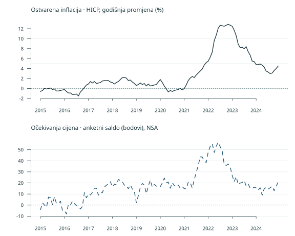

Od podataka do zaključka
Dan 2 · Jedan skup podataka · Razgovor, primjer i pokušaj
Nastavite u AI razgovoru iz prvog dana, uz isto pitanje, plan i učitani CSV. Danas pregledavamo podatke, izrađujemo grafove, uspoređujemo razdoblja i pišemo zaključak. Najprije pogledamo primjer, zatim svatko prilagodi postupak svojem pitanju.
Ako počinjete ovdje, preuzmite CSV i dodajte ga jednom u AI razgovor koji podržava učitavanje datoteka i izvršavanje analize. Možete krenuti od zajedničkog pitanja ispod. Ako je prethodna sesija istekla, ponovno dodajte istu datoteku. Grafovi, tablice i kod prikazuju se u razgovoru.
Podaci i zajedničko pitanje
Radimo sa 120 mjesečnih opažanja za Hrvatsku od 2015. do 2024. Stupac hicp_yoy_pct sadrži godišnju stopu HICP-a u postocima. Stupac expectations_balance sadrži saldo odgovora potrošača o kretanju cijena u sljedećih 12 mjeseci, izražen u bodovima salda. Podaci su spremljeni 26. listopada 2026.
Kako su se inflacija i saldo očekivanja kretali od 2015. do 2024. i koliko je njihova povezanost ovisila o razdoblju?
Pogledajte svih 120 mjeseci
Prikazane su dvije mjere koje analiziramo. CSV sadrži i zemlju, šifre jedinica i oznake statusa.
| Mjesec | Godišnja stopa HICP-a, % | Saldo očekivanja, bodovi |
|---|---|---|
| 2015-01 | -0,6 | -4,2 |
| 2015-02 | -0,4 | 2,0 |
| 2015-03 | 0,0 | 0,0 |
| 2015-04 | -0,1 | -2,2 |
| 2015-05 | 0,0 | 7,2 |
| 2015-06 | 0,1 | 6,8 |
| 2015-07 | -0,2 | 0,5 |
| 2015-08 | -0,1 | 7,6 |
| 2015-09 | -0,5 | 1,4 |
| 2015-10 | -0,5 | 1,7 |
| 2015-11 | -0,4 | 3,5 |
| 2015-12 | -0,3 | -4,9 |
| 2016-01 | -0,2 | -5,0 |
| 2016-02 | -0,6 | -8,0 |
| 2016-03 | -0,9 | 1,0 |
| 2016-04 | -0,9 | 0,1 |
| 2016-05 | -1,2 | 3,5 |
| 2016-06 | -1,2 | 1,4 |
| 2016-07 | -1,1 | -0,5 |
| 2016-08 | -1,5 | -1,1 |
| 2016-09 | -0,7 | -3,5 |
| 2016-10 | -0,3 | -1,1 |
| 2016-11 | 0,2 | 11,3 |
| 2016-12 | 0,7 | 6,6 |
| 2017-01 | 0,9 | 9,9 |
| 2017-02 | 1,4 | 9,1 |
| 2017-03 | 1,1 | 11,4 |
| 2017-04 | 1,4 | 15,3 |
| 2017-05 | 1,0 | 15,1 |
| 2017-06 | 1,1 | 8,9 |
| 2017-07 | 1,2 | 11,3 |
| 2017-08 | 1,5 | 11,2 |
| 2017-09 | 1,6 | 16,3 |
| 2017-10 | 1,6 | 17,9 |
| 2017-11 | 1,6 | 19,0 |
| 2017-12 | 1,3 | 21,1 |
| 2018-01 | 1,2 | 16,3 |
| 2018-02 | 0,9 | 18,8 |
| 2018-03 | 1,2 | 18,5 |
| 2018-04 | 1,4 | 23,2 |
| 2018-05 | 1,8 | 21,9 |
| 2018-06 | 2,2 | 21,1 |
| 2018-07 | 2,2 | 17,9 |
| 2018-08 | 2,1 | 17,4 |
| 2018-09 | 1,6 | 14,8 |
| 2018-10 | 1,7 | 18,3 |
| 2018-11 | 1,3 | 14,5 |
| 2018-12 | 1,0 | 12,3 |
| 2019-01 | 0,6 | 2,1 |
| 2019-02 | 0,8 | 8,5 |
| 2019-03 | 1,1 | 16,1 |
| 2019-04 | 0,8 | 19,5 |
| 2019-05 | 1,0 | 18,0 |
| 2019-06 | 0,5 | 10,4 |
| 2019-07 | 0,9 | 17,1 |
| 2019-08 | 0,5 | 22,6 |
| 2019-09 | 0,6 | 16,1 |
| 2019-10 | 0,7 | 18,6 |
| 2019-11 | 0,8 | 17,1 |
| 2019-12 | 1,3 | 16,9 |
| 2020-01 | 1,8 | 16,7 |
| 2020-02 | 1,2 | 19,9 |
| 2020-03 | 0,5 | 24,4 |
| 2020-04 | -0,1 | 20,3 |
| 2020-05 | -0,7 | 20,7 |
| 2020-06 | -0,4 | 15,2 |
| 2020-07 | -0,6 | 20,2 |
| 2020-08 | -0,4 | 17,7 |
| 2020-09 | -0,3 | 16,5 |
| 2020-10 | -0,2 | 18,1 |
| 2020-11 | 0,0 | 15,2 |
| 2020-12 | -0,3 | 16,7 |
| 2021-01 | 0,0 | 14,8 |
| 2021-02 | 0,7 | 14,7 |
| 2021-03 | 1,6 | 20,7 |
| 2021-04 | 2,1 | 20,3 |
| 2021-05 | 2,4 | 15,4 |
| 2021-06 | 2,2 | 23,0 |
| 2021-07 | 2,7 | 29,4 |
| 2021-08 | 3,1 | 35,8 |
| 2021-09 | 3,5 | 43,5 |
| 2021-10 | 3,9 | 43,4 |
| 2021-11 | 4,7 | 39,7 |
| 2021-12 | 5,2 | 38,4 |
| 2022-01 | 5,5 | 48,1 |
| 2022-02 | 6,3 | 53,0 |
| 2022-03 | 7,3 | 55,5 |
| 2022-04 | 9,6 | 47,5 |
| 2022-05 | 10,7 | 53,1 |
| 2022-06 | 12,1 | 56,7 |
| 2022-07 | 12,7 | 52,6 |
| 2022-08 | 12,6 | 49,0 |
| 2022-09 | 12,5 | 36,8 |
| 2022-10 | 12,7 | 35,8 |
| 2022-11 | 12,9 | 37,0 |
| 2022-12 | 12,7 | 34,3 |
| 2023-01 | 12,5 | 26,8 |
| 2023-02 | 11,7 | 21,1 |
| 2023-03 | 10,6 | 25,7 |
| 2023-04 | 8,9 | 18,6 |
| 2023-05 | 8,2 | 19,9 |
| 2023-06 | 8,3 | 20,4 |
| 2023-07 | 8,0 | 22,2 |
| 2023-08 | 8,4 | 17,3 |
| 2023-09 | 7,4 | 19,2 |
| 2023-10 | 6,7 | 15,3 |
| 2023-11 | 5,5 | 14,9 |
| 2023-12 | 5,4 | 16,2 |
| 2024-01 | 4,8 | 15,5 |
| 2024-02 | 4,8 | 13,5 |
| 2024-03 | 4,9 | 15,6 |
| 2024-04 | 4,7 | 8,9 |
| 2024-05 | 4,3 | 14,7 |
| 2024-06 | 3,5 | 16,0 |
| 2024-07 | 3,3 | 14,4 |
| 2024-08 | 3,0 | 15,6 |
| 2024-09 | 3,1 | 17,0 |
| 2024-10 | 3,6 | 13,0 |
| 2024-11 | 4,0 | 16,7 |
| 2024-12 | 4,5 | 20,8 |
2.1 Upoznajte i provjerite podatke
Razgovor. Što bismo provjerili prije nego što od ovih podataka zatražimo graf ili izračun?
Primjer. Nastavite u razgovoru s učitanim CSV-om. Zatražite početni pregled.
Učitaj priloženi CSV i prikaži prvih i posljednjih pet redaka. Navedi broj redaka, nazive stupaca i raspon mjeseci. Objasni što predstavlja jedan redak te jedinice stupaca hicp_yoy_pct i expectations_balance. Koristi stvarni sadržaj datoteke.
Usporedite prikaz sa svih 120 mjeseci na ovoj stranici. Jedan redak je jedan mjesec u Hrvatskoj. Prvi je 2015-01, a posljednji 2024-12. U CSV-u su i šifre jedinica te oznake statusa podataka.
Isprobajte. Zatražite provjeru potpunosti tablice.
Provjeri jesu li mjeseci jedinstveni i uzastopni od 2015-01 do 2024-12. Prikaži broj nedostajućih vrijednosti u hicp_yoy_pct i expectations_balance. Prazne oznake hicp_flag i expectations_flag znače da dodatni status nije naveden. Sačuvaj sva opažanja i pokaži kod koji si izvršio.
Pogledajte nalaz i objasnite bi li podaci bili spremni za analizu. Očekujemo 120 različitih uzastopnih mjeseci, 0 duplikata i 0 praznina u dvjema brojčanim serijama. Usporedite nekoliko prikazanih redaka s tablicom na stranici, uključujući neki koji nije na početku.
2.2 Dopunite i objasnite kod
Razgovor. Kako prikazati dvije mjere da možemo usporediti njihovo kretanje i pritom jasno vidjeti njihove jedinice?
Primjer. Zatražite analizu učitanog skupa.
Iz našeg CSV-a izradi dva vremenska grafa jedan iznad drugoga, sa zajedničkom osi mjeseci od 2015-01 do 2024-12. Na prvom prikaži hicp_yoy_pct u postocima, a na drugom expectations_balance u bodovima salda. Zatim napravi godišnju tablicu s prosjekom svake mjere i brojem mjeseci. Svaka godina treba imati 12 mjeseci. Prosjek HICP-a nazovi prosjekom mjesečnih godišnjih stopa. Pokreni kod i prikaži grafove, tablicu i kod ovdje u razgovoru. Uz rezultate navedi Eurostat i DG ECFIN te datum preuzimanja podataka 26. listopada 2026.
Pogledajte razdoblja rasta i pada. Otvorite dio koda koji grupira podatke po godini i zatražite njegovo objašnjenje. Provjerite oznake osi i broj mjeseci u godišnjoj tablici.
Isprobajte. Prilagodite prikaz svojem pitanju. Primjerice, zatražite grafove samo za 2020.–2024., s jasno označenim godinama. Zadržite cijeli učitani skup za kasnije usporedbe. Pogledajte koji se dio koda promijenio i objasnite jedan obrazac koji se sada lakše vidi.
U godišnjoj tablici za 2022. očekujemo 10,63 % za prosjek mjesečnih godišnjih stopa HICP-a i 46,62 boda za prosjek salda, uz 12 mjeseci. To su dvije različite mjere. Svaku čitamo u njezinoj jedinici.
Pogledajte referentni graf

Izvori su Eurostat i DG ECFIN. Podaci su preuzeti 26. listopada 2026. Vlastita obrada.
2.3 Ponovite analizu od početka
Razgovor. Koliko se naš zaključak može promijeniti kada promijenimo promatrano razdoblje? Kako provjeriti broj koji je AI prikazao?
Primjer. Vratite se učitanom CSV-u i provjerite jedan godišnji rezultat.
Iz izvornog CSV-a ponovno izdvoji svih 12 mjeseci 2022. Prikaži njihove vrijednosti hicp_yoy_pct, zbroj i prosjek. Pokreni izračun i usporedi ga s godišnjom tablicom koju smo već dobili.
Zbroj je 127,6, a prosjek 127,6 / 12 = 10,6333, približno 10,63 %. Usporedite izdvojene retke s tablicom podataka na ovoj stranici. Zatim pitajte što bi se izgubilo kada bismo cijelo desetljeće opisali jednim brojem.
Isprobajte. Usporedite povezanost u dvama unaprijed odabranim razdobljima.
Ponovno kreni od svih 120 redaka izvornog CSV-a. Izračunaj Pearsonovu korelaciju između hicp_yoy_pct i expectations_balance za cijelo razdoblje, za 2015.–2019. te za 2020.–2024. Poveži vrijednosti iz istog mjeseca. Za svaki izračun prikaži broj opažanja i izvršeni kod. Usporedi rezultate s vremenskim grafovima i opiši razlike.
Objasnite daje li jedna korelacija za cijelo razdoblje dovoljan opis. Za zajedničku usporedbu koristimo ista dva podrazdoblja, a zatim nalaz povežite sa svojim pitanjem.
Pogledajte referentne rezultate
| Razdoblje | Broj mjeseci | Pearsonova korelacija |
|---|---|---|
| 2015.–2024. | 120 | 0,6985 |
| 2015.–2019. | 60 | 0,8279 |
| 2020.–2024. | 60 | 0,5342 |
Pozitivna linearna povezanost u ovom je uzorku jača u ranijem podrazdoblju. To je opisna usporedba. Za provjeru statističke razlike, uzroka ili uspješnosti prognoze treba zaseban postupak koji uvažava vremensku ovisnost.
2.4 Napišite i uredite zaključak
Razgovor. Koji je najvažniji nalaz za naše pitanje i kojim ga rezultatom možemo potkrijepiti?
Primjer. Pogledajte nacrt koji se oslanja na provjerenu godišnju tablicu.
Godišnji prosjek mjesečnih godišnjih stopa HICP-a u Hrvatskoj porastao je s 2,68 % u 2021. na 10,63 % u 2022., a prosjek salda očekivanja s 28,26 na 46,62 boda. Obje mjere u toj usporedbi rastu. Rezultat opisuje njihovo kretanje, a objašnjenje uzroka traži dodatne dokaze.
Zatražite jasniju verziju uz iste brojke, jedinice i značenje. Usporedite izmjenu s tablicom. Posebno provjerite ostaje li jasno što godišnji prosjek sažima.
Isprobajte. U istom razgovoru napišite oko 150 riječi koje odgovaraju na vaše pitanje iz prvog dana. Oslonite se na svoj graf i provjerene rezultate. Objasnite glavni obrazac, upotrijebite brojke koje ga podupiru i navedite jedno ograničenje. Zatim pošaljite ovaj upit uz svoj odlomak.
Uredi ovaj odlomak da bude jasan i prirodan. Sačuvaj brojke, jedinice, razdoblje i granice zaključka. Koristi rezultate iz našeg razgovora. Objasni svaku promjenu koja bi mogla utjecati na značenje.
Pročitajte završnu verziju uz graf i tablicu. Pokažite jedan nalaz i objasnite zašto ga smatrate uvjerljivim. Završni rezultat ostaje u razgovoru kao graf i kratak zaključak.
Za provjeru i daljnje čitanje
Priručnik za drugi dan objašnjava isti postupak detaljnije. Primjeri odgovora i referentni rezultati pomažu pri usporedbi. Ako alat trenutačno ne može izvršiti analizu, koristite prikazane rezultate i zajedno razmotrite njihove zaključke.